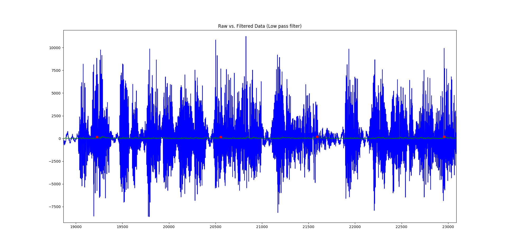
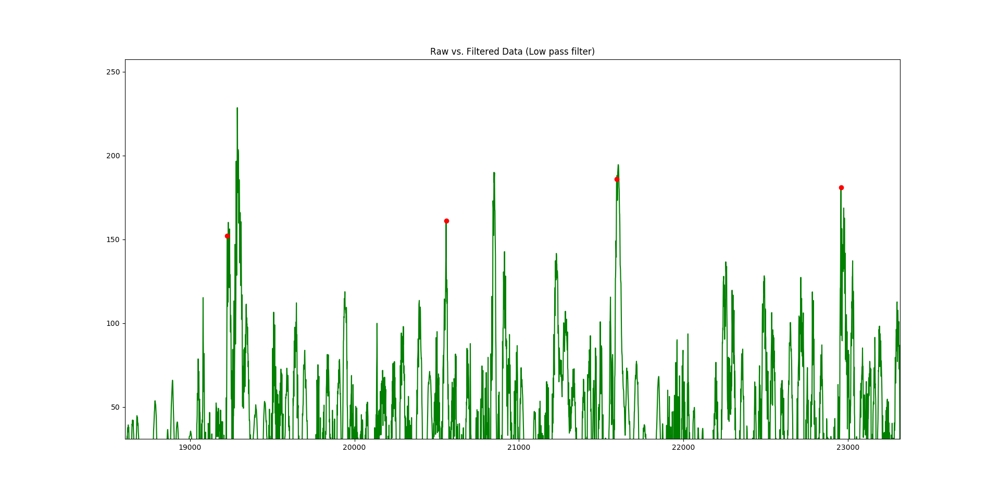
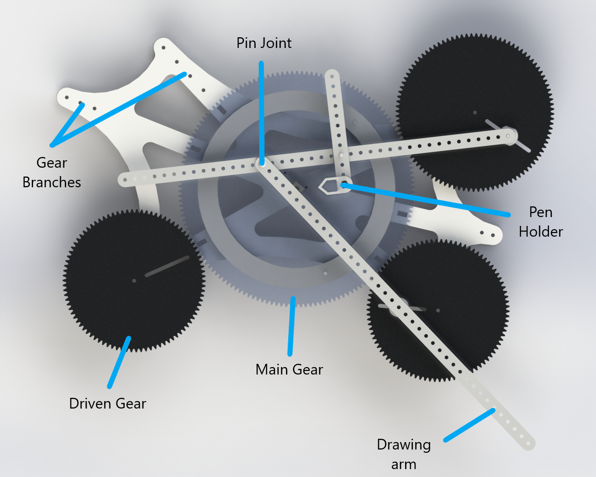
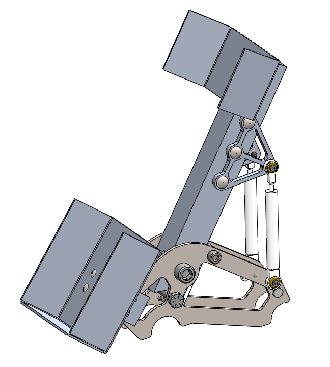
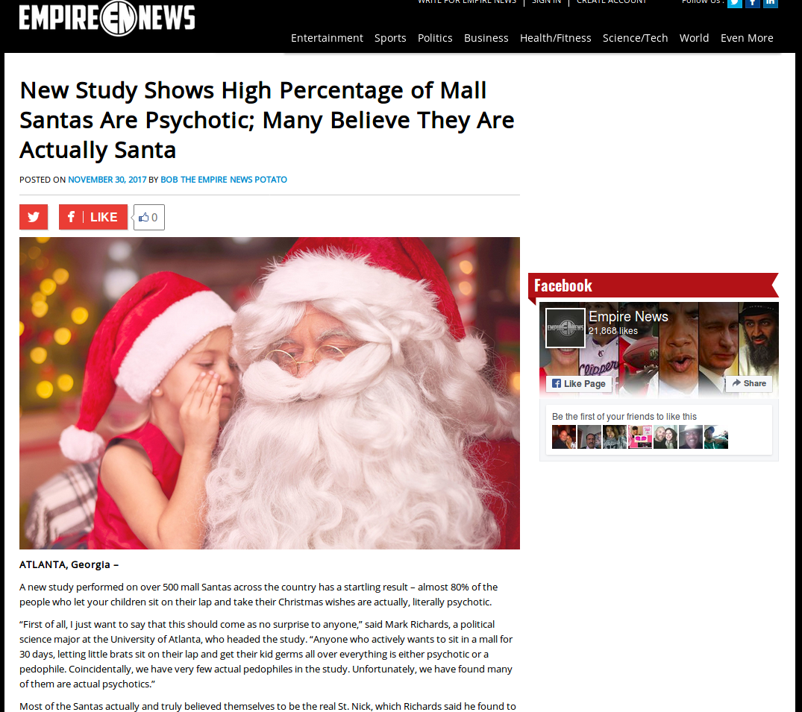
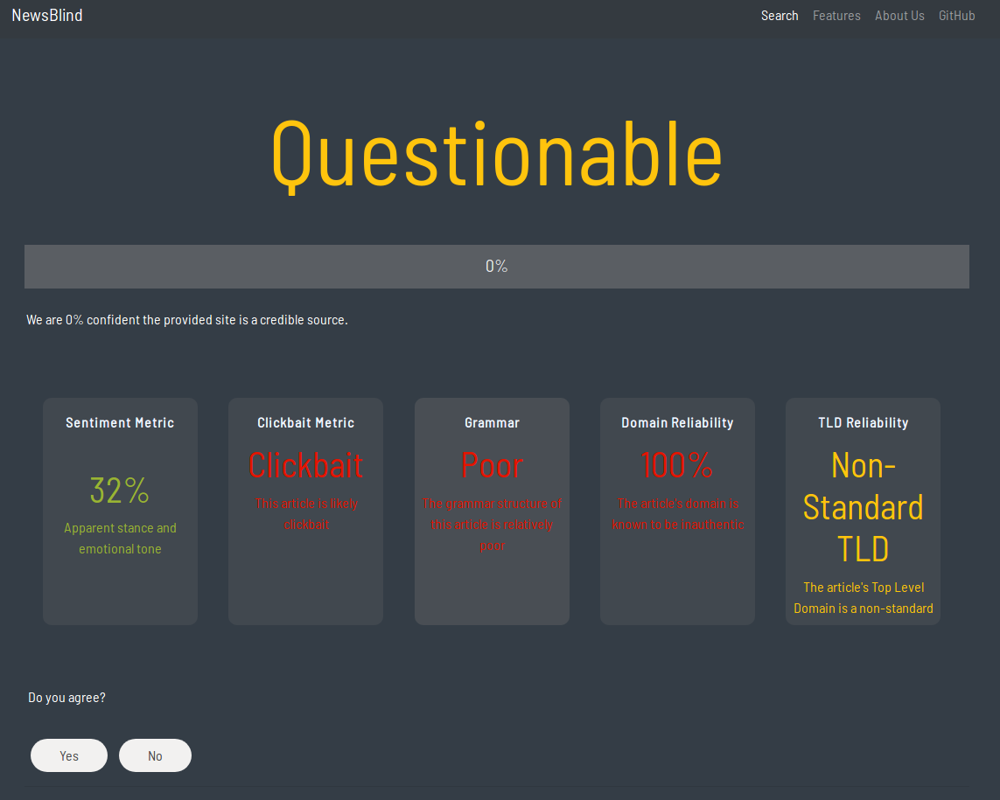
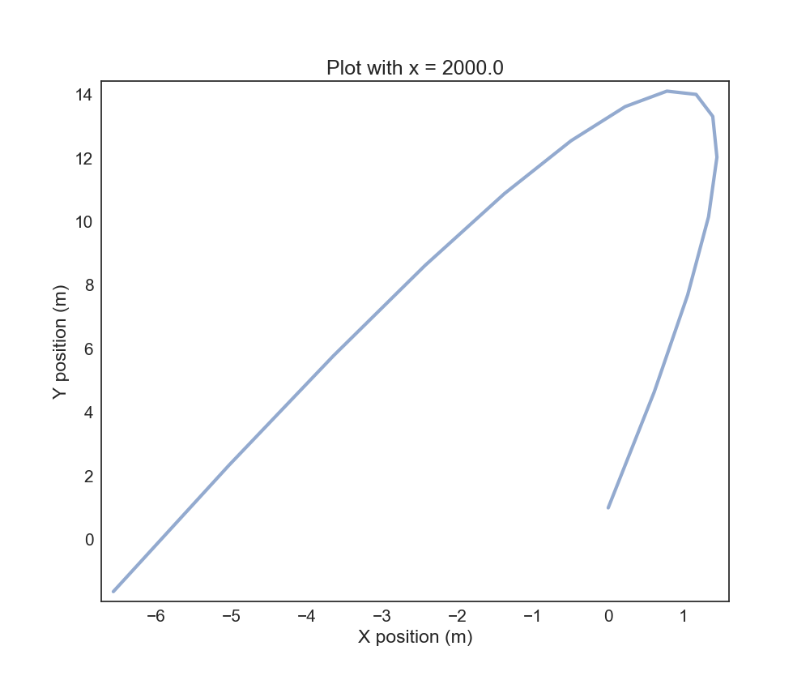

Hey there! I'm Jonathan. I'm currently studying Mechanical Engineering at the Olin College of Engineering in Needham Massachusetts. Many of the projects exhibited in this portfolio are quite whimsical in nature, and are usually born with someone asking the question, "Hey, you know what would be awesome?" I love to spend my free time making these fun and cool projects come to life.
This was a personal project that I worked on in the Summer of 2018. The purpose of the project was to create an script that could take two audio files and create a musical mashup using them. The project currently only works in a very basic sense: one of the songs must have no instrumental track, and the other song must have no vocal track, and the songs kind of need to start with similar tempos. It was really quite basic, but has produced some good results thus far, which I'm rather proud of. Below is my favorite mashup; it is between Ratatat's Loud Pipes and Eminem's Lose Yourself. Just a fair warning, it has a bit of explicit content.
If you're dying to see more SICK mashups like this, check out my soundcloud!
The songs that I used came in the form of .wav files, which is simply a file with a bunch of speaker amplitudes at given time steps (usually at a frequency of 44100Hz). The first thing that I do is attempt to determine the tempo of each song. The tempo of most songs is below 200 BPM, which corresponds to a frequency of roughly 3Hz. According to the Nyquist sampling theorem, we really don't need the data to be at 44100Hz to detect a signal of 3Hz. As such, I first decided to downsample the data, taking only every 44th data point. This means that I was left with a signal whose sampling frequency was roughly 1000Hz, which is much more managable, and still leaves a lot of room for potential error in the tempo detection algorithm.
Using a buttersworth low pass filter, I first filtered both of the input songs. This natrually attenuated the high frequency noise of the signal and allowed me to hone in on the lower frequencies of the file, which will be better indicators of tempo. From there, I took the absolute value of the filtered signal and ran a basic peak detection algorithm on it.
Above is a graph showing the unfiltered signal in blue, the absolute value of the filtered signal in green, and interpreted peaks as red dots.
Above is a graph showing the absolute value of the filtered signal in green, and interpreted peaks as red dots. Some of the red dots are not on the best local maxima due to a minimum distance restriction placed on the peak detection algorithm.
Classifying the peaks gives one a good idea for candidate beats of the song. There could be many false positives, and many beats that failed to get detected, but thankfully, there is a way around this. Once all of the peaks were detected, the temporal distance between each peak and its "n" closest neighbors was found and recorded. This time is associated with a tempo, which is calculated and stored in a histogram. Once the histogram is fully completed, the most common tempo is then returned as the algorithm's best guess for the tempo of the song. The reason why the "n" closest neighbors are considered is to give tolerance for peaks falsely labeled as beats. Because the entire song is used to generate candidate peaks, it is rather tolerant for beaks being failed to be classified as peaks.
Once the tempo is determined, one of the songs needs to have its tempo corrected in order to match the other. Currently, the project artificially changes the sampling frequency of the target song to change the tempo. This is not ideal, as simply changing the sampling frequency will not only change tempo, but it will also change pitch. To try and create a higher quality end product, both songs (in their full, un-downsampled forms) get populated with linearly interpolated data points for amplitude based off of the existing data points. This introduces an increased level of granularity in the frames of the music, which allows for a higher quality time shift to be made. Then, the song to be temporally changed is inserted at the correct sampling frequency. Because the two songs now have different sampling frequencies, the song that is inserted gets another round of linear time interpolation in order to place the samples at roughly the right spot.
This project was super fun to work on, and I am pretty proud of some of the results. That being said, there are so many ways that this project can be improved, many of which I wish to implement going into the future.
This was a personal project that I worked on in the spring of 2018. Made with lasercut gears and interchangable linkage arms, this machine was be able to draw fully customizable cycloids! It was pretty basic, but was able to produce some pretty cool art, which currently hangs on the walls of my dorm room.
The machine was quite simple. There was a main gear driven in the very center of the entire assembly. This main gear also served as the drawing platform and was what the drawing paper was fastened to. All other gears were driven by this central main gear. There were multiple branches of the mounting plate that allowed for different series of gears to mesh with the main gear. There was a 25-50-75-100 tooth series, a 30-60-90-120 tooth series, and a 20-40-60-80 tooth series. Different ratios allowed for different patterns to be drawn on the paper. Additional branches allowed gears to be chained together in series. Each driven gear would have the ability to drive a drawing arm. To increase the amount of customiability, each gear was given a slot rather than a fixed pivot hole. This allowed the user to tune the effective radius of the gear, without actually changing the gear ratio. The drawing arms themsevles had many evenly spaced holes to allow the user to customize further.
While rather simple, a lot of thought was put into making the project as modular and easy to use as possible. 1/4-20 bolts and nylock nuts served as simple pivots that were axially constrained. While not as good as an actual shaft with a bearing or bushing, it was a system that was certainly easily available, cheap, and good enough for this application. The main plate that everything was bolted to was designed to house as many different gears, or combinations of gears as possible to really maximize the space of customiability. Below is a video of the machine in action!
Close ProjectOlin's Electric Motorsports club builds and competes with a formula SAE electric racecar each year. For the 2017-2018 Season (my first year on the team), I was tasked with designing the accelerator pedal for the club's third racecar, Mk.3. This new pedal was lighter than the previous year's pedal, easier to manufacture, more ergonomic, and features more accurate sensors. The pedal was designed in Solidworks.
 On the previous year's car, Mk.2, rotational potentiometers were used to measure the angluar dispalcement of the pedal in order to control the car. Because the resolution of the senors was low, the car often jumped and skipped when accelerating to full speed. As such, Mk.3's accelerator pedals utilized linear potentiometers, which have a much higher resolution. While this allows for smoother and more consistent acceleration for the car, it meant having to completely redesign the geometry of the pedal to accomodate the new sensor
The main pedal was made out of simple 1/8" aluminum box channel. While not the sleekest way to make a pedal, it is by far the simplest and durastically cut down on manufacturing time. The bottom mounting plates were made out of waterjet steel that were later welded directly to the chassis, and the top bracket for the linear potentiometers were made out of 3D printed PLA.
In order to ensure that the pedal would be able to wistand the load from the driver's foot, several tests were conducted within the 3D analysis software, ANSYS Workbench. A liberal load (200 pounds) was applied to the end of the pedal in order to determine the stress within the assembly. Because of the analysis, I was able to get a rough idea for the factor of safety of the pedal, and know that it will not fail at the competition.
Close ProjectOlin's Electric Motorsports club builds and competes with a formula SAE electric racecar each year. For the 2018-2019 Season (my second year on the team), I was helped to design the suspension and chassis for the club's fourth racecar, Mk.4. Specifically, I was spearheading geometry analysis and packaging between subsystems.
An important consideration that goes into designing a car is the torsional rigidity of the chassis. All analysis is done assuming that the chassis doesn't deform under load, which for most cases is a valid assumption to make. While the chassis does deform under load, the amount it deforms is usually assumed to be negligible. In order to validate this assumption, I analyzed the torsional rigidity of the chassis using ANSYS workbench. Torsion in the chassis comes mostly from the difference between the roll rates in the front vs. the rear of the vehicle. As the vehicle undergoes lateral weight transfer due to cornering, any difference in the roll rate between the front and rear of the car will be the net torsional moment felt by the car.
The analysis was done using line bodies. Each line body was assigned the appropriate circular cross section, and the entire assembly of line bodies was then treated as one large part. Fixed supports were placed on the rear uprights of the vehicle, and a pure torsional moment was applied to the car through the front suspension uprights. The maximum displacement of the chassis was then measured, to determine the torsional rigidity of the chassis (which was assumed to be constant). In the final chassis design, I found that the estimated torsional rigidity was roughly 2800 Nm/deg. I read in a UMich paper that a good rule of thumb for torsional rigidity is roughly 10 times the roll rate of the vehicle. The roll rate that we designed for the Mk.4 car is 180 Nm/deg, which means that a torsional rigidity of 2800 is quite safe. Unfortunately, most of the tubes on the chassis were rules required and could not be reduced or eliminated for the sake of weight savings.
Due to rules regulations and hardware limitations, one of the largest considerations that needed to be taken into consideration was the motion ratio of the shocks. A motion ratio describes how much a shock compresses relative to how much the wheel moves. It is important for calculating metrics such as wheel rate, ride rate, and roll rate. It also is important in determining how much force gets directed into the chassis, versus into the springs of the shock.
I developed a MATLAB scripts that simplified the model into 2D and simulated what happened to the motion ratio over the course of the wheel's total travel. This is a valid assumption to make, as all of the hardware relating to the shocks is mounted such that they are all co-planar to prevent any bending moments in any of the components. The model worked by simulating the wheel moving a small step in its travel, and then calculating where each of the other components of the system (the rocker and the shock) must move to given geometric constraints, such as fixed lengths and fixed pivot points on the chassis. By examining how much each component moved, I was able to generate plots for estimated motion ratio, angles between different linkage arms in the system, and the theoretical spring rate needed for the system.

All suspension designs start as front and side view 2D designs before moving fully into 3D. This allows different parameters and characteristics to be determined and tuned more in isolation before things get combined in 3D. To expedite the process of designing the front view suspension geometry, I developed a MATLAB script that would take certain input parameters, such as the pick up points for suspension members in the front view, as well as linkage lengths, and artificially simulate what the design would do over ranges of wheel travel. This script was useful, as it allowed the team to quickly test changes on a very low level before investing more time into higher level refinement. It allowed us to quickly and swiftly agree upon a front view design and move to 3D.
The script looks at a few main things, namely the instant centers of both sides of the suspension, and how they migrate as the wheels go through their full travel, as well as the roll center of the car, and how that geometric point migrates as the wheels go through their full travel. The instant centers are marked in the figure to the right in red squares, and the roll centers are marked with green squares. This analysis ensured that the instant centers would not migrate so much as to introduce additional scrub in or out, and also ensured that the roll center had minimal vertical migration, allowing us to treat the roll center height as a constant in the rest of our analyses down the line.
I worked on this project in the winter of 2017, and it was my first independent project invovling webscraping and the implementation of a machine learning algorithm. Inspired by Cary Huang (citation needed), I set out to collect MIDI files from the web, feed them into an existing Recurrent Neural Network in order to generate completely new music. The results were a bit underwhelming, but this project served as merely a simple introduction into applying machine learning algorithms. Below is a sample song that the algorithm produced. It becomes mildly decent after about 10 seconds, I promise!
I decided to use Andrej Karpathy's character based recurrent neural network in order to generate new music. His script takes text as both inputs and outputs. As such, I needed to find a way to convert MIDI into text. MIDI is essentially structured as a list of commands (mostly "Note on" and "Note off" commands), each with a time stamp and some other information (such as pitch or velocity). I ended up encoding each pitch as an ascii character, with the time being implicitly defined. Each new line character represented a jump in time. This allowed me to both compress the data, but also allowed me to convert music into a format that would be recognized by Karpathy's RNN.
Close ProjectThis project was a culmination of various different analysis techniques learned in the class: "Quantitative Engineering Analysis". We wrote a script allows a robotic vacuum cleaner called a NEATO to perform SLAM, or Simultaneous Localization and Mapping. Using 2D LIDAR information and wheel encoder odometry, we attempted to navigate and map a closed loop course denoted by a series of plastic cups.

This project utilized a bunch of really cool analysis techniques. The robot first took a scan of the environment, and then using a cluster detection and feature extraction algorithm that I wrote, we were able to determine the location of cup relative to the robot. The robot then used the encoder information to translate and rotate the points that it scanned into the global coordinate system. Then, using a Bayesian correspondence detector that I developed, we were able to determine which points corresponded to new cups, and which points corresponded to previously observed cups. Finally, using my implementation of the Iterative Closest Points algorithm, we were able to finely reconcile the information contained in the new scan, with the existing global map, and line up corresponding points as best as possible. More information can be found in the embeded paper below:
This project produced some pretty cool images and figures, which are shown off below

Made for a hackathon, this project is a webapp that tries to determine if an article contains fake news or not. I worked on the webscraping aspect of the project, as well as constructing a measurement method for weighing metadata associated with input articles, such as top level domain trustworthiness, credibility of the author, and the general sentiment of the article.
NewsBlind is a team of engineers from Olin College of Engineering. Our product is a web app that takes URLs inputted by the user and determines whether the article in question contains false, biased, and/or questionable information. We recognized that our interconnectedness on the web and the lightning speed at which data is shared creates an environment that makes it very easy for falsehoods and misinformation to spread. Easy access to accurate information on the internet is crucial to the continued success of advancing technology and society. While it is of the utmost importance to minimize the pertinence of fake news, we firmly believe that outright censorship of information is wrong. Our product is aimed at informing viewers about the accuracy of the media they consume, but ultimately leaves the decision up to them whether they wish to view and/or share the article or not.
NewsBlind is a webapp that is supposed to empower users by presenting them with relevant information about an article before they actually read it. Our webapp does not censor specific articles, rather it helpings the user to determine the level of skepticism they should have when approaching an article. The decision to read and believe an article is still made by the user. In addition to this, we took many steps to ensure our webapp would not be polarizing, as fake news can often be. We are very transparent with the factors that go into the final rating of an article, and we output a confidence spectrum rather than a binary "fake or real", which helps to inform the user without coming across as accusatory or hostile, increasing the probability the user will take the advice of the webapp.
Newsblind has quite a few neat features. It includes:
Below exhibits what actually using the app looks like, given an obviously fake news article
 The result of the program, after giving it the URL of the article in question.
NewsBlind is only available to those who have the source code. We had originally hoped to port the webapp to a chrome extension or a more permanent and public website such that anyone will be able to use our program. In addition, there are a few more features that we would have liked to add. Firstly, we would;ve liked to analyze the author of the article in question and if possible, present some background information about the author to the user. In addition, we were working on implementing a crowdsourced polling feature that will allow users to vote on whether they agree or not with the output of the program. This would not impact the output of the program, but would allow users to compare their opinions to the opinions of others, which can be quite powerful and persuasive.
You can learn more about this project by visiting our DevPost
Close Project
Have you ever wondered what it'd be like to throw a ball on flat earth? In this computer simulation, we modeled how a projectile would fly on a flat earth. Optimal parameters were calculated such that the projectile would come back to the launch site.
This project was done in the context of a kinematics project for a modeling and simulation class. Modeling something on flat earth was not only a very funny and entertaining idea, but it offered the opportunity to explore some really counter-intuitive physics.
What exactly about flat earth is interesting to model? Well, flat earthers believe that the earth is accelerating upwards at 9.8 meters per second squared, which is how they explain why things accelerate towards the ground at that rate. We called this effective gravity in the model. However, they also believe in gravity. These two beliefs introduce a very interesting environment, as the gravity vector acting upon any projectile can change quite drastically over time in both magnitude and direction.
This project was made using Python. In order to model flat earth, we took the surface area of earth, the average density of the earth, and the weight of the earth and calculated the radius and thickness of a flat earth.
This project produced some really interesting results. The complex nature of the environment that we modeled led to some quite counter-intuitive results.


These two graphs show the trajectory of a standard baseball when thrown at 60 degrees relative to horizontal with an initial velocity of 120 meters per second (a bit unrealistic, yes), 240,000 meters away from the north pole, which is the center of flat earth. Under these conditions, the ball will come back to the launch site, as the vector sum of drag, gravity, and effective gravity are roughly 60 degrees throughout the flight of the ball. As such, the ball returns to the original position with about the same velocity and angle.
This graph shows the trajectory of a ball thrown 80 degrees to horizontal very close to the pole. Because of the force of gravity, it actually ends up behind the throwing position.

In this graph, we swept parameters for throwing distance from the pole as well as throwing angle relative to horizontal. A negative value on the y axis corresponds to the ball landing behind the original throwing position.

This heat map is a sweep of both initial velocity and throwing angle with a constant distance from the pole. Cool colors represent large absolute distances between the throwing position, and landing position while warm colors represent small absolute distances. It really shows the counter-intuitive nature of physics on a flat earth, as one would normally expect a pretty uniform transition from hot to cold as the velocities increase, however this is not the case
Close Project
Inspired by Nature's most majestic hopper: the sea cucumber, this lasercut hardboard hopper can split into two in mid-air to seemingly double jump. This project was made for a first year introductory course called Design Nature
This hopper is very loosely inspired by the sea cucumber. The hopper can eject a smaller part of itself as part of a "self defense" mechanism. When the first, larger hopper, is in the air, the smaller hopper shortly jumps off of the top of the first hopper. The reason why I designed the hopper to do this is because it would be mechanically complex, and thus quite interesting. Additionally, being able to see the hopper visibly bounce back up, mid-air would be really cool.
This was a class project, so there were a bunch of design constraints placed on us. Most notably:
The one design restraint that really impedes my design goal of making a double jumping hopper is the fact that the hopper needs to say in one piece. In order to get around this, I tethered the smaller hopper to the bigger hopper. While this severely limits the behavior of the jump, it was necessary to make sure my hopper followed the rules.
Both of the hoppers have very similar mechanisms. They both use latex tubing as stored energy to actuate legs that suddenly raise the center of mass of the hopper. Additionally, they both use friction triggers to release stored energy. The real interesting part of the hopper comes in the interaction between the big hopper and the small hopper. In order to guarantee that the small hopper doesn't actuate while the big one is still on the ground, the legs of the big hopper are used to restrain the legs of the small hopper. That way, it is only after the first hopper jumps that any load is placed on the trigger for the second hopper. The friction trigger for the second hopper was finely tuned to guarantee that the small hopper jumps while in the air. Both hoppers only have two legs as to reduce mechanical complexity. In order to execute a successful double jump, the first hopper has to jump straight up: if it has any pitch or roll rotation, the second hopper will not jump straight up. Reducing the number of legs helps to ensure that both hoppers stay upright in the air.
This project started with an idea and some basic sketches. From there, I developed it into a rough sketch model as a sort of a special proof of concept. From there, I refined the design and transferred it into CAD. Benchtop models, or prototypes, were constructed following dimensions in the CAD, allowing for further refinement. The CAD model and physical model co-evolved to produce the hopper that I ended the project with.
This project was pretty successful. Both triggers were able to go off at the right times pretty reliably. And while there was some rotation of the big hopper while in the air, it wasn't enough to completely throw off the trajectory of the small hopper. I believe that there are two places that the hopper could be improved. Firstly, the smaller hopper could have been more securely fastened to the big hopper to more efficiently convert the stored potential energy from the latex to height. Secondly, I could have made both hoppers jump higher, or at least for longer, in order to accentuate the double jump. Slow motion footage is needed to really appreciate the hopper's double jump.